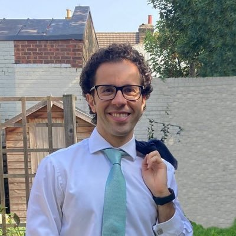

People
"It's not only about papers, it is also about people."
Supervision
Behzad Zamanipour
Imperial College London
University of Edinburgh
Collaborations and networks
IIASA
Integrated Assessment and Climate Change Research Group, Energy, Climate and Environment Program.
Horizon Europe consortia
Modelling teams across Europe, working to shared scenario protocols.
Assessment author teams
IPCC Working Group III, the Task Group on Data, the WCRP assessment of high-impact events and tipping points, and the UNEP Global Environment Outlook.
Networks
Euro-Mediterranean AI for Climate Change network. Scientific working group on artificial intelligence at the Integrated Assessment Modeling Consortium.
Beyond research

University and College Union. Member at Imperial College London.
Gendered Conference Campaign. Signatory of the pledge on all-male panels.
Taste of Freedom: Charity Cookbook 2. Contributor of a recipe from home. All proceeds go to charity.
Previously: management committee member at Bath Welcomes Refugees, and co-opted member of Bath City Forum at Bath and North East Somerset Council.